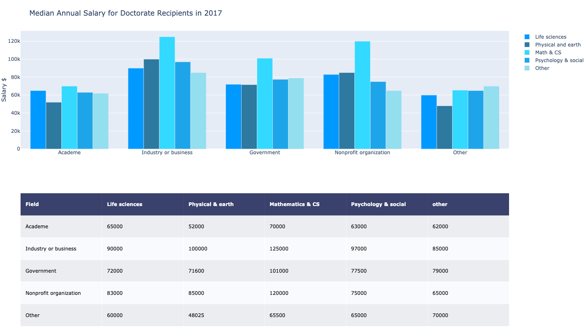
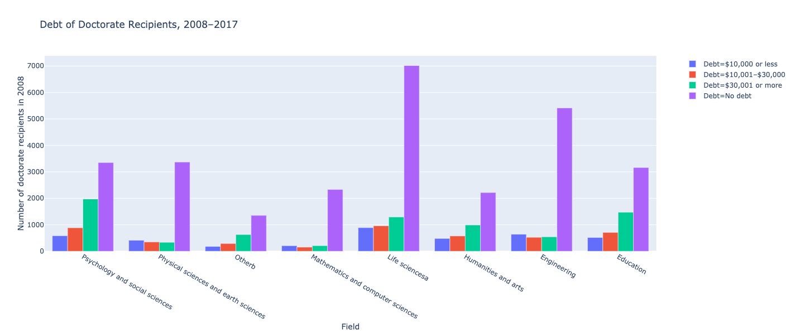
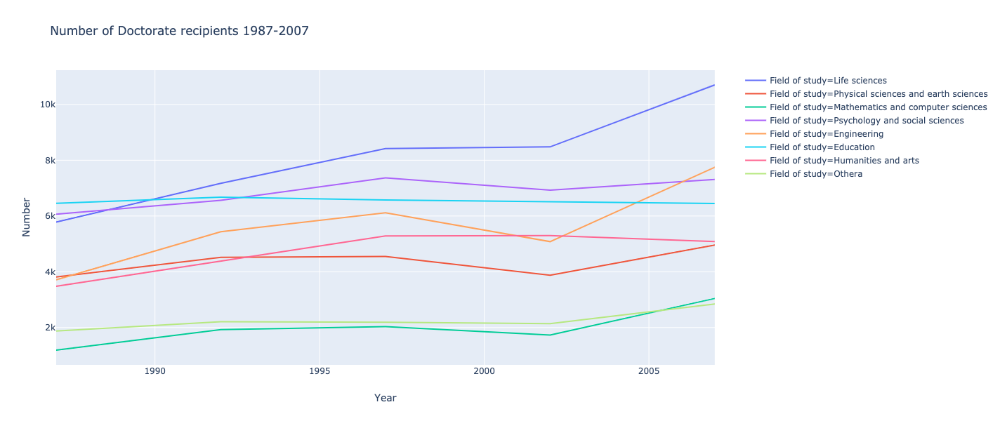
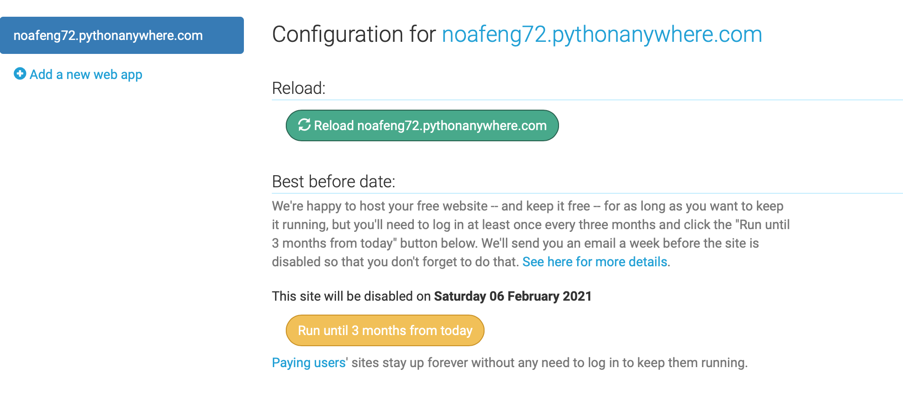

PHD in US
This dataset comes from PhDs awarded in the US. It collects data on the number and characteristics of individuals receiving research doctoral degrees from U.S. academic institutions. Based on its official website, this survey included surveys from individuals receiving a research doctorate from a U.S. academic institutions in various fields.
Dash & Plotly
Dash is a Open Source Python library for creating reactive, Web-based applications. Dash is a user interface library for creating analytical web applications. Those who use Python for data analysis, data exploration, visualization, modelling, instrument control, and reporting will find immediate use for Dash.
Analysis
Online dashboard can be found here.
There are three plots included in this Dashboard. I included screenshots in this post. For the interactive version. Dashboard here](http://noafeng72.pythonanywhere.com).

This table illustrates the median salary of PHDs in 2017. As we could see, there is a quite large between different fields. The salaries in Math & CS are higher than the rest of areas overall sectors, and PHDs who work in the industry have higher salaries than rest of sectors overall.

This table illustrates the debt situation of PHDs from 2008 to 2017. The majority of PHDs have no debts, while there are significant number of PHDs who have quite high debts (over 30,000 USD) in their course of PHD study. Based on this graph, the financial situation of PHDs is overall stable.

This table illustrates the number of PHDs recipients from 2008 to 2017. We can see from the plot for each field, the number of PHDs recipients are increasing. To be more specific, the area of life sciences has the biggest increase, this is a sign of scientific focus of the US society in life science areas such as healthcare. Overall, the number of PHDs recipients and this trend is seemingly to maintain, I can estimate that there will be more PHDs in the following years.
Dash Code
Overall, the code style in Dash is similar to other plotting packages. There are plenty of tutorials on plotly official website for Python implementation of Dash. Following is a part of my full code, that calls the part of figure and place them onto the the dashboard.
app.layout = html.Div([
html.H1(children='Dashboard on Science & Engineering Doctorates'),
dcc.Graph(id="fig22"),
dcc.Graph(
id='bar1'
),
dcc.Slider(
id='year1',
min=2008,
max=2017,
value=2008,
marks={str(year): str(year) for year in year_unique},
step=None
),
dcc.Graph(
id='Number of Doctorate recipients 1987 - 2007',
figure=fig11
)
Deployment
One easy approach is to use:pythonanywhere. I followed this introduction on Medium.
First, we need to sign up to pythonanywhere.com by creating a Beginner account. On the top bar go to Web > Add a new web app, the select Flask as the Python Web framework. You need to choose the version of Python that works best for your peoject.
The next step is uploading the python file. On the top bar go to Files and, in the Directories sidebar, click on mysite/. You’ll find a file named flask_app.py inside. You can delete the default empty python file.
The third step is to install the dependencies. On the Consoles tap, we’ll find the Bash console, this is the same as well as the Python console. Then we can start uploading the files we generated.
Last step is to change the code in Web and in the Code section after opening the WSGI configuration file based on your code and board implementation.
